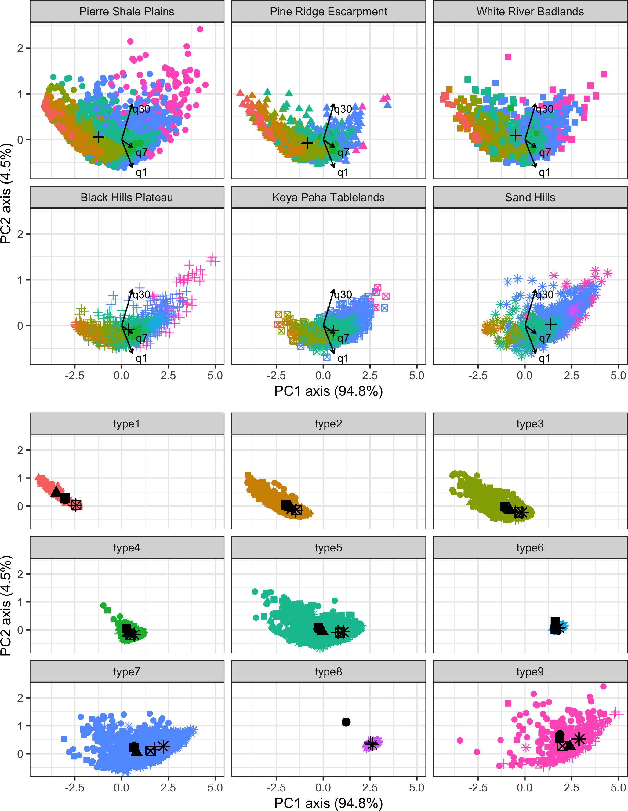

Watershed storage parameters improve streamflow estimation accuracy for ungaged watersheds in a semi-arid region of the Northern Great Plains, USA
Charles Jason Tinant1, Scott Kenner2
1 STEM Department, Oglala Lakota College; 2 Department of Civil Engineering, South Dakota School of Mines and Technology

Research Motivation
- Better streamflow estimates are needed for hydrologic studies on Tribal lands.
- Watershed storages may provide useful metrics to improve streamflow estimates.
- Modeling watershed storage at the regional scale is necessary because storages vary substantially in time and space.
- Top-down modeling approaches may accurately classify watersheds for regional pooling and identify key hydrologic landscape parameters related to watershed storage.
Study Area Description
Figure 1: USGS stream gages near Pine Ridge and Rosebud reservations
- SW South Dakota and NW Nebraska - semi-arid mid-latitude cold-steppe climate (BSk) – wet spring, hot summer, dry cold winter.
- USGS streamflow gages (N = 42) for water years 1980-2018 in non-karstic sedimentary watersheds without dams or abstractions.
Hydrologic Group Classification
- Unsupervised classification of log-transformed daily (q1), 7-day (q7) and 30-day (q30) flow depths by a finite mixture model (Fraley 2016, figure 2).
- Bias-corrected and accelerated bootstrapping of log(q1), log(q7), and log(q30) by ecoregion after a PCA-transform (figure 3).
Hydrologic landscape parameter development
- GIS‐derived metrics following the hydrologic landscape conceptual framework (Winter 2001, Epting et al. 2018).
- GLM inputs are watershed zonal statistics for 3 planimetric, 4 elevation-derived, 4 climate, forest cover, and 3 soils-based metrics, plus seasonality, trend, and ecoregion type (table 1).

Figure 2: Finite mixture model results averaged at the monthly timescale. The PC1 axis describes hydrologic export. The PC2 axis describes hydrologic evenness (q30- minus q1-values)
Figure 3: Monthly q1 bootstrap results at the 95% confidence interval.
Hypothesis testing
- Lasso, ridge, and elastic net penalized-GLMs trained with 80/20 splits and 5-fold cross-validation. q1 are response variables, and hydrologic landscape metrics are explanatory variables (table 1).
- Lasso GLM selected, holdout data fitted to the model, and evaluated against null models of mean daily flow depths (figure 4).
Table 1: Final GLM coefficient values by ecoregion
| Explanatory variable | Transformation | Pierre Shale Plains | Pine Ridge Escarpment | White River Badlands | Black Hills Plateau | Keya Paha Tablelands | Sand Hills |
|---|---|---|---|---|---|---|---|
| 0.78 | 1.03 | 1.12 | 1.64 | 1.73 | 2.07 | ||
| Percent cover | ln(x) | 0.24 | 0.00 | 0.00 | 0.00 | 0.00 | 0.00 |
| Hydrologic conductivity | ln(x) | 0.19 | 0.00 | 0.00 | 0.00 | 0.19 | 0.08 |
| Summer proximity | 0.17 | 0.17 | 0.24 | 0.04 | 0.07 | 0.03 | |
| Spring proximity | 0.15 | 0.26 | 0.26 | 0.01 | 0.14 | 0.11 | |
| Year | 0.10 | 0.03 | 0.07 | 0.08 | 0.00 | 0.04 | |
| Watershed area | 1/ln(x) | 0.02 | 0.05 | 0.00 | 0.24 | 0.03 | 0.00 |
| Drainage density | 0.01 | 0.00 | 0.00 | 0.03 | 0.00 | -0.09 | |
| Watershed slope | ln(x) | 0.00 | 0.08 | 0.00 | -0.22 | 0.01 | 0.11 |
| Watershed length to width ratio | ln(x) | -0.11 | 0.05 | 0.00 | -0.31 | -0.17 | -0.06 |
| Watershed outlet elevation | sqrt(x) | -0.17 | 0.00 | -0.07 | 0.00 | 0.00 | 0.00 |

Figure 4: Lasso and null model results shown as a flow-duration curve. Higher percentage of time exceeded values correspond with lower q1 depths.
Key Findings
- Hydrologic export varies significantly by ecoregion.
- Hydrologic export is related to watershed storage. Low hydrologic export ecoregions exhibit high seasonal and annual dependance. Moderate export ecoregions exhibit moderate seasonal and annual dependance. High export ecoregions exhibit low seasonal and annual dependance.
- The key flow path timing from watershed storage to streamflow differs by ecoregion. Key flow paths are active for low storage watersheds during mid-range to dry antecedent moisture conditions, moderate storage watershed flow paths are active during moist to mid-range conditions, high storage watersheds flow paths are active during high-flow to mid-range conditions.
Acknowlegements
- Research supported by NSF Awards #1416478 and #1642052.
- RMarkdown code available at https://github.com/cjtinant/eco-drought email::jtinant@olc.edu Twitter::
@charlesjtinant